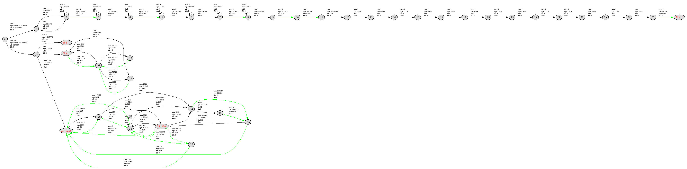
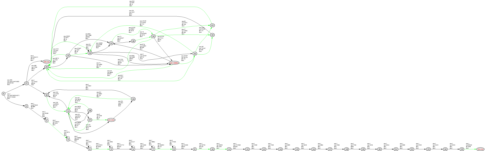
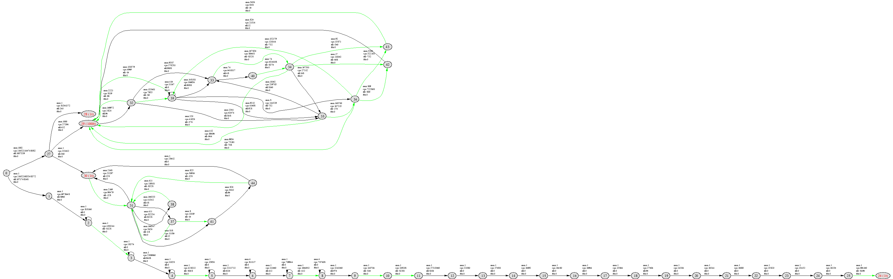

in the middle of processing. Throughput has started to slow, as nodes
are getting stuck in 35.

Things are fully wedged now. All worker threads are stuck in 35.

After waiting a couple of minutes, things finally finish up, and
threads go back to waiting for new jobs.
